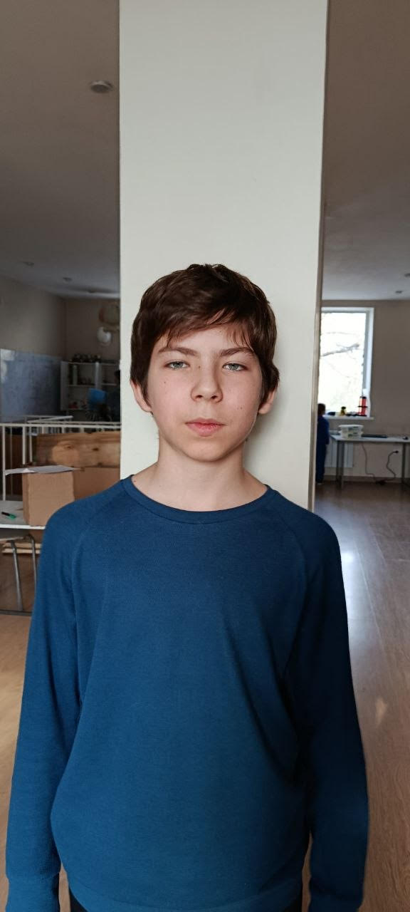

Начинающий разработчик. Здесь собраны мои проекты, эксперименты и идеи.
Увлекаюсь веб-разработкой и созданием цифровых продуктов. В этом портфолио я делюсь своими работами: от первых шагов в коде до текущих экспериментов. Постоянно учусь новому и стараюсь улучшать свои навыки.
Моя предыдущая версия сайта-визитки.
Недоделанный проект, который планировался как ресурс для родителей.
Приложение для отслеживания времени и задач.
Проект не доработан: функционал ограничен, управление сложное, находится на стадии сырого прототипа.